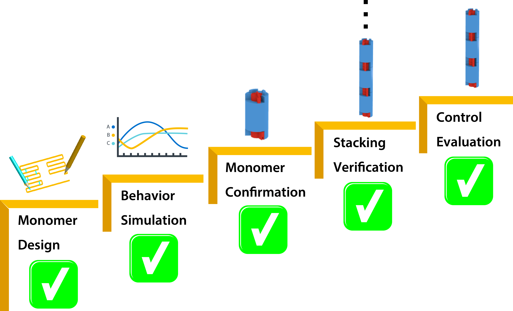

Background & Motivation
Many proteins are known to function in multimeric configuration. For instance, Trp RNA-Binding Attenuation Protein(TRAP) [1] and GTPase [2] assemble circular structures while Tetratricopeptite-repeat Protein (TRP) [3] assembles a linear structure (Fig. 1)
In the case of circular configuration, proteins have intrinsic curvature and the number of monomers are determined by the angle of a monomer. However, most of linear assembly like the fiber or string of proteins grow unlimitedly. Controlling the number of linear assembly is difficult without additional capping mechanism [4-5]. Here, we focused on constructing size-controllable linear homomultimer by DNA origami. We proposed a novel mechanism to control the linear assembly.
In the case of circular configuration, proteins have intrinsic curvature and the number of monomers are determined by the angle of a monomer. However, most of linear assembly like the fiber or string of proteins grow unlimitedly. Controlling the number of linear assembly is difficult without additional capping mechanism [4-5]. Here, we focused on constructing size-controllable linear homomultimer by DNA origami. We proposed a novel mechanism to control the linear assembly.
Conventionally, DNA nanostructure such as DNA tile utilizes the hybridization between complementary base sequences [6-7]. In contrast, we propose a method which directly utilizes shape-complementary DNA origami structures to construct various multimeric complexes [8].
Project Idea
In our project, we have designed a DNA origami monomer consisting of a cylinder and a twisted shaft, where the shaft can rotate inside the cylinder [9]. The shaft works as a vernier to count the number of stacked monomer and grooves on the cylinder limits the movement of the shaft that determines the number of stacking. Furthermore, by adjusting the twist angle of the shaft and the groove width of the cylinder, we can change the number arbitrarily (Fig. 2).
Project Goal & Achievement

����Our goal is to realize the linear homomultimer which is able to control the number of stacking. We divide the goal into 5 sub-goals (Fig. 3).
- 1.To design the monomer with the vernier mechanism.
- 2.To simulate the stacking behavior using a physics engine.
- 3.To confirm the shape of the DNA origami monomer by experiment.
- To verify the stacking of monomers by experiment.
- To evaluate the stacking control mechanism.
����Actually, we have achieved all sub-goals now. The designed DNA origami monomer is constructed correctly. The monomers stack to form multimer as we confirmed. Moreover, the functionality of proposed vernier mechanism is well realized.
Project Goal & Achievement
����Our goal is to realize the linear homomultimer which is able to control the number of stacking. We divide the goal into 5 sub-goals (Fig. 3).
- To design the monomer with the vernier mechanism.
- To simulate the stacking behavior using a physics engine.
- To confirm the shape of the DNA origami monomer by experiment.
- To verify the stacking of monomers by experiment.
- To evaluate the stacking control mechanism.
����Actually, we have achieved all sub-goals now. The designed DNA origami monomer is constructed correctly. The monomers stack to form multimer as we confirmed. Moreover, the functionality of proposed vernier mechanism is well realized.